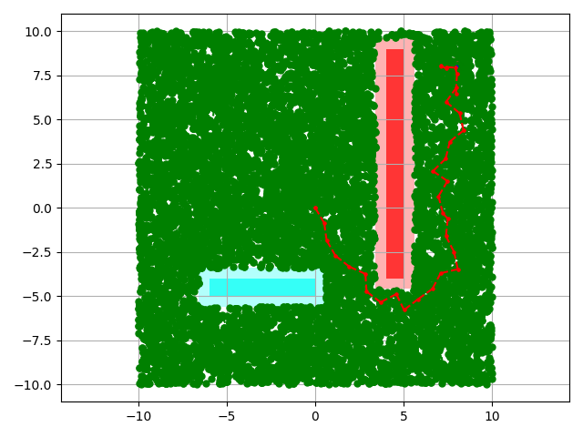

Projects
NSIT Solar Car
Designed and built India's fastest solar-electric vehicle. Being the team lead I worked on multiple aspects of the car. Designed and fabricated CFRP body in-house. The project received commendation the Hon. PMO India.
UAV Motion Planner
Developed an motion planer for autonomous UAV flight for real-time obstacle avoidance.
PinBall
Created a physics-based pinball game using Arduino and servos as part of course project MEAM 510 (UPenn).
Battle Bot
Designed an autonomous battle robot with high-torque motors as part of MEAM 510 (UPenn). Builtfrom scratch - the robot localizes using a Vicon beason and IR sensors and utilizes tessealization based motion planner written in C, implmented on an ESP32. Additionally, robot can be remote-controlled over WiFi.
Graph-based Path Planning
Graph based path planning algorithm (RRT*, RRT, A*, Dijkstra). GitHub
Facial Detection and Tracking
Face detection and tracker utilizing Harr features in Matlab demonstration with IP camera.
Multi-Robot Team for Mapping and Inspection
Lead a team of 10 to develop a team of robots (UGV & Drones) for mapping and inspection of large areas. Developed mobile-manipulator pipelines with remote control and feedback. Implemented RtabMap based SLAM pipeline and graph-based motion planner for navigation.